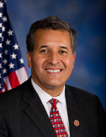

Share

Juan Vargas
Score adjustments
Foreign-lobby money compromises America First. The U.S. has no formal mutual-defense treaty with Israel; AIPAC operates a super-PAC (United Democracy Project) that spent over $100M during the 2024 cycle on independent expenditures against U.S. candidates who criticize Israeli government policy. A candidate who has accepted that money has, in their own revealed preference, accepted a foreign-policy filter on their congressional vote. The same logic covers China-linked donations, where federal law also prohibits CCP members from contributing.
For every candidate with a documented donor record, two things happen: (1) the specific category question is marked False (foreign_policy_restraint[q4] for AIPAC + China; economic_stewardship[q5] — the WEF/ESG/Davos capture question — for Soros-network donors), so the per-category subscore drops by 2 points; (2) an additional dollar-bracket adjustment is applied to the total, making the penalty proportional to the magnitude of the funding. Both impacts are visible on this page.
- AIPAC / pro-Israel-lobby contributions-20TrackAIPAC career-total report shows $316,199 from AIPAC and pro-Israel-lobby PACs.AIPAC operates a super-PAC (United Democracy Project) that spent over $100M during the 2024 cycle on independent expenditures targeting U.S. candidates who criticize Israeli government policy. The U.S. has no formal mutual-defense treaty with Israel. RESOLUTE Citizen treats documented AIPAC contributions as a failure on foreign_policy_restraint/q4 (the foreign-lobby question) AND applies a dollar-bracket adjustment to the total score.
Contact This Official
📍 Local district office (1)
Reach out directly. Your voice matters. Proverbs 29:2 — When the righteous are in authority, the people rejoice.
Official Profile
Category Breakdown
1 claim
Holds a 100% rating from Reproductive Freedom for All (successor to NARAL) and an F from SBA Pro-Life America. Condemned the Dobbs decision as 'fundamentally wrong and extremely disappointing, impacting millions of women across the country,' and supports codifying abortion rights into federal law — rejecting personhood from conception.
- WikipediaEncyclopedia
- BallotpediaCenter
1 claim
A member of the House Equality Caucus who voted for the Respect for Marriage Act in 2022, federally codifying same-sex marriage and repealing the Defense of Marriage Act; his official issues page states he is 'committed to ensuring respect, dignity, and safety for the LGBTQ+ community' — rejecting the one-man/one-woman marriage standard.
- U.S. HouseOfficial
- WikipediaEncyclopedia
1 claim
In February 2025 Vargas joined a protest against the Trump administration's immigration enforcement campaign, standing alongside Cardinal Robert McElroy and other religious leaders to oppose mass deportation operations — opposing mandatory deportation of illegal aliens.
- WikipediaEncyclopedia
- BallotpediaCenter
Sources & Evidence
Bias ratings sourced from AllSides and Ad Fontes Media. Classifications for government, reference, and advocacy domains are maintained by U.S.M.C. Ministries; see source_bias.json.
References & footnotes
Every answer above with a [n] marker corresponds to one of the footnotes below. Wayback-archive links preserve the page as it read at our access date so a reader can verify the citation even if the original URL changes or disappears.
- [1]Voted NO on Born-Alive Abortion Survivors Protection Act (HR 26, 2023) — does not affirm personhood from conception or even at live birth after attempted abortion. Official
Voted NO on Born-Alive Abortion Survivors Protection Act (HR 26, 2023) — does not affirm personhood from conception or even at live birth after attempted abortion.
- [2]Voted NO on Born-Alive Abortion Survivors Protection Act (HR 26, 2023) — does not affirm personhood from conception or even at live birth after attempted abortion. Reference
Voted NO on Born-Alive Abortion Survivors Protection Act (HR 26, 2023) — does not affirm personhood from conception or even at live birth after attempted abortion.
- [3]Cosponsored Women's Health Protection Act (HR 3471, HR 8296); voted to pass HR 8296 (2022). Unclassified
Cosponsored Women's Health Protection Act (HR 3471, HR 8296); voted to pass HR 8296 (2022).
- [4]Cosponsored Women's Health Protection Act (HR 3471, HR 8296); voted to pass HR 8296 (2022). Unclassified
Cosponsored Women's Health Protection Act (HR 3471, HR 8296); voted to pass HR 8296 (2022).
- [5]Endorsed by Planned Parenthood Action Fund (2024, 2026); 100% NARAL Pro-Choice rating. Left Advocacy
Endorsed by Planned Parenthood Action Fund (2024, 2026); 100% NARAL Pro-Choice rating.
- [6]Endorsed by Planned Parenthood Action Fund (2024, 2026); 100% NARAL Pro-Choice rating. Unclassified
Endorsed by Planned Parenthood Action Fund (2024, 2026); 100% NARAL Pro-Choice rating.
- [7]Voted YES on Respect for Marriage Act (HR 8404, 2022); did not affirm one-man/one-woman covenant. Official
Voted YES on Respect for Marriage Act (HR 8404, 2022); did not affirm one-man/one-woman covenant.
- [8]Voted YES on Respect for Marriage Act (HR 8404, 2022); did not affirm one-man/one-woman covenant. Unclassified
Voted YES on Respect for Marriage Act (HR 8404, 2022); did not affirm one-man/one-woman covenant.
- [9]Cosponsored Equality Act; cosponsored Trans Bill of Rights (2023); recognized as Congressional Champion by Advocates for Trans Equality; LGBTQ Equality Caucus member. Unclassified
Cosponsored Equality Act; cosponsored Trans Bill of Rights (2023); recognized as Congressional Champion by Advocates for Trans Equality; LGBTQ Equality Caucus member.
- [10]Cosponsored Equality Act; cosponsored Trans Bill of Rights (2023); recognized as Congressional Champion by Advocates for Trans Equality; LGBTQ Equality Caucus member. Official
Cosponsored Equality Act; cosponsored Trans Bill of Rights (2023); recognized as Congressional Champion by Advocates for Trans Equality; LGBTQ Equality Caucus member.
- [11]Voted NO on HR 734 Protection of Women and Girls in Sports Act (April 2023) — party-line opposing transgender-in-women's-sports ban; Equality Act cosponsor. Official
Voted NO on HR 734 Protection of Women and Girls in Sports Act (April 2023) — party-line opposing transgender-in-women's-sports ban; Equality Act cosponsor.
- [12]Voted NO on HR 734 Protection of Women and Girls in Sports Act (April 2023) — party-line opposing transgender-in-women's-sports ban; Equality Act cosponsor. Reference
Voted NO on HR 734 Protection of Women and Girls in Sports Act (April 2023) — party-line opposing transgender-in-women's-sports ban; Equality Act cosponsor.
- [13]Voted NO on Parents Bill of Rights Act (HR 5, March 24, 2023) — party-line all-D no. Official
Voted NO on Parents Bill of Rights Act (HR 5, March 24, 2023) — party-line all-D no.
- [14]Voted NO on Parents Bill of Rights Act (HR 5, March 24, 2023) — party-line all-D no. Unclassified
Voted NO on Parents Bill of Rights Act (HR 5, March 24, 2023) — party-line all-D no.
- [15]Voted NO on HR 5 Parents Bill of Rights addressing curriculum transparency and gender-ideology in K-12. Reference
Voted NO on HR 5 Parents Bill of Rights addressing curriculum transparency and gender-ideology in K-12.
- [16]PARTIAL: Devout Catholic, former Jesuit seminarian; publicly invokes faith ('I believe deeply in the Bible') at Fordham — affirms personal Christian profession (though policy votes contradict). Unclassified
PARTIAL: Devout Catholic, former Jesuit seminarian; publicly invokes faith ('I believe deeply in the Bible') at Fordham — affirms personal Christian profession (though policy votes contradict).
- [17]PARTIAL: Devout Catholic, former Jesuit seminarian; publicly invokes faith ('I believe deeply in the Bible') at Fordham — affirms personal Christian profession (though policy votes contradict). Official
PARTIAL: Devout Catholic, former Jesuit seminarian; publicly invokes faith ('I believe deeply in the Bible') at Fordham — affirms personal Christian profession (though policy votes contradict).
- [18]Voted NO on HR 1919 Anti-CBDC Surveillance State Act (July 17, 2025) along D party line. Official
Voted NO on HR 1919 Anti-CBDC Surveillance State Act (July 17, 2025) along D party line.
- [19]Voted NO on HR 1919 Anti-CBDC Surveillance State Act (July 17, 2025) along D party line. Reference
Voted NO on HR 1919 Anti-CBDC Surveillance State Act (July 17, 2025) along D party line.
- [20]As House Financial Services Task Force on Monetary Policy Ranking Member, publicly defends Federal Reserve independence — opposes audit/abolition. Official
As House Financial Services Task Force on Monetary Policy Ranking Member, publicly defends Federal Reserve independence — opposes audit/abolition.
- [21]Signed April 2023 Progressive Caucus statement rejecting Republican debt-ceiling/spending demands; no support for balanced-budget amendment located. Official
Signed April 2023 Progressive Caucus statement rejecting Republican debt-ceiling/spending demands; no support for balanced-budget amendment located.
- [22]Voted NO on HR 22 SAVE Act (April 10, 2025) requiring documentary proof of citizenship for voter registration; only 4 D's crossed and Vargas was not one. Official
Voted NO on HR 22 SAVE Act (April 10, 2025) requiring documentary proof of citizenship for voter registration; only 4 D's crossed and Vargas was not one.
- [23]Voted NO on HR 22 SAVE Act (April 10, 2025) requiring documentary proof of citizenship for voter registration; only 4 D's crossed and Vargas was not one. Reference
Voted NO on HR 22 SAVE Act (April 10, 2025) requiring documentary proof of citizenship for voter registration; only 4 D's crossed and Vargas was not one.
- [24]Repeatedly opposed border wall; demanded halt of construction at Friendship Park; 'there's no reason for the Trump wall.' Official
Repeatedly opposed border wall; demanded halt of construction at Friendship Park; 'there's no reason for the Trump wall.'
- [25]Repeatedly opposed border wall; demanded halt of construction at Friendship Park; 'there's no reason for the Trump wall.' Unclassified
Repeatedly opposed border wall; demanded halt of construction at Friendship Park; 'there's no reason for the Trump wall.'
- [26]Original cosponsor American Dream and Promise Act (citizenship path for DACA); voted to pass it twice; introduced Homeownership for Dreamers Act. Official
Original cosponsor American Dream and Promise Act (citizenship path for DACA); voted to pass it twice; introduced Homeownership for Dreamers Act.
- [27]Voted NO on Laken Riley Act (Jan 22 2025); leads federal effort to block immigrant data sharing w/ DHS for deportations. Reference
Voted NO on Laken Riley Act (Jan 22 2025); leads federal effort to block immigrant data sharing w/ DHS for deportations.
- [28]Voted NO on Laken Riley Act (Jan 22 2025); leads federal effort to block immigrant data sharing w/ DHS for deportations. Official
Voted NO on Laken Riley Act (Jan 22 2025); leads federal effort to block immigrant data sharing w/ DHS for deportations.
- [29]Voted for Bipartisan Safer Communities Act (expanded background checks and red-flag funding); opposes permitless carry per caucus position. Official
Voted for Bipartisan Safer Communities Act (expanded background checks and red-flag funding); opposes permitless carry per caucus position.
- [30]Voted YES (2022) to reinstate Assault Weapons Ban (HR 1808); supports red-flag laws via BSCA; Gun Violence Prevention Task Force member. Official
Voted YES (2022) to reinstate Assault Weapons Ban (HR 1808); supports red-flag laws via BSCA; Gun Violence Prevention Task Force member.
- [31]One of ONLY 4 House Democrats to vote AGAINST March 2025 Iran War Powers Resolution; opposes Article I restraint on Iran action — 'flexibility when service members are actively engaged'. Center
One of ONLY 4 House Democrats to vote AGAINST March 2025 Iran War Powers Resolution; opposes Article I restraint on Iran action — 'flexibility when service members are actively engaged'.
- [32]One of ONLY 4 House Democrats to vote AGAINST March 2025 Iran War Powers Resolution; opposes Article I restraint on Iran action — 'flexibility when service members are actively engaged'. Unclassified
One of ONLY 4 House Democrats to vote AGAINST March 2025 Iran War Powers Resolution; opposes Article I restraint on Iran action — 'flexibility when service members are actively engaged'.
- [33]One of ONLY 4 House Democrats to vote AGAINST March 2025 Iran War Powers Resolution; opposes Article I restraint on Iran action — 'flexibility when service members are actively engaged'. Official
One of ONLY 4 House Democrats to vote AGAINST March 2025 Iran War Powers Resolution; opposes Article I restraint on Iran action — 'flexibility when service members are actively engaged'.
- [34]Voted against limiting Iran hostilities; supports continued Israel security supplemental funding — opposes forever-wars-withdrawal framing. Unclassified
Voted against limiting Iran hostilities; supports continued Israel security supplemental funding — opposes forever-wars-withdrawal framing.
- [35]Voted YES on national-security supplementals to Ukraine/Israel/Indo-Pacific; broke with party to support $14.3B Israel aid Nov 2023 (one of 12 Ds). Official
Voted YES on national-security supplementals to Ukraine/Israel/Indo-Pacific; broke with party to support $14.3B Israel aid Nov 2023 (one of 12 Ds).
- [36]AIPAC was Vargas's #1 donor 2024 (~$162,052 = 16% of contributions) and 2026 (~$63,500 by April 2026); AIPAC-endorsed. Note: publicly denied AIPAC money Feb 2026 — contradicted by FEC records. Unclassified
AIPAC was Vargas's #1 donor 2024 (~$162,052 = 16% of contributions) and 2026 (~$63,500 by April 2026); AIPAC-endorsed. Note: publicly denied AIPAC money Feb 2026 — contradicted by FEC records.
- [37]AIPAC was Vargas's #1 donor 2024 (~$162,052 = 16% of contributions) and 2026 (~$63,500 by April 2026); AIPAC-endorsed. Note: publicly denied AIPAC money Feb 2026 — contradicted by FEC records. Unclassified
AIPAC was Vargas's #1 donor 2024 (~$162,052 = 16% of contributions) and 2026 (~$63,500 by April 2026); AIPAC-endorsed. Note: publicly denied AIPAC money Feb 2026 — contradicted by FEC records.
- [38]AIPAC was Vargas's #1 donor 2024 (~$162,052 = 16% of contributions) and 2026 (~$63,500 by April 2026); AIPAC-endorsed. Note: publicly denied AIPAC money Feb 2026 — contradicted by FEC records.
AIPAC was Vargas's #1 donor 2024 (~$162,052 = 16% of contributions) and 2026 (~$63,500 by April 2026); AIPAC-endorsed. Note: publicly denied AIPAC money Feb 2026 — contradicted by FEC records.
- [39]Introduced COVID-19 Emergency Medical Supplies Enhancement Act (2021), supportive of vaccine production; no opposition to mandates located. Official
Introduced COVID-19 Emergency Medical Supplies Enhancement Act (2021), supportive of vaccine production; no opposition to mandates located.
Have Information About This Official?
Help us improve this scorecard. If you have evidence of this official's positions — voting records, social media posts, public statements, or corrections — submit it below and we'll review and update the profile.